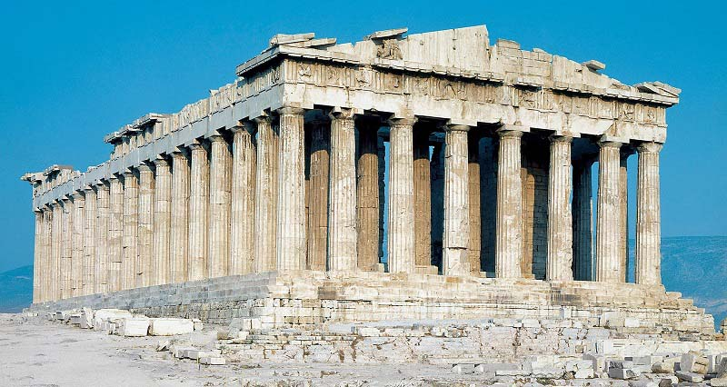

Mitología clásica
La mitología clásica incluye a la romana y a la greca, ya que sus diferencias son sutiles, como los
nombres de las deidades o algunas creencias específicas. También se la conoce como mitología grecorromana o grecolatina.
Elementos sobrenaturales
| ROMANA |
GRIEGA |
| Andrómeda |
Andrómeda |
| Apolo |
Apolo |
| Calisto |
Calisto |
| Diana |
Artemisa |
| Europa |
Europa |
| Hércules |
Heracles |
| Júpiter |
Zeus |
| Marte |
Ares |
| Mercurio |
Hermes |
| Neptuno |
Poseidón |
| Perséfone |
Perséfone |
| Perseo |
Perseo |
| Pegaso |
Pegaso |
| Plutón |
Hades |
| Saturno |
Cronos |
| Ulises |
Odiseos |
| Venus |
Afrodita |
| Tabla de comparación de nombres de las deidades romana / griega |

La caja de pandora
Zeus y el resto de los dioses vivían en el monte Olimpo. En la tierra el titán Prometeo creó la raza
humana a la que dotó de conocimientos y le enseñó a respetar a los dioses. A Zeus le gustó mucho lo
que había hecho Prometeo y quiso darle un premio. Ordenó al dios Hefesto que creara la primera
mujer de la tierra para regalársela a Prometeo. Hefesto modeló con arcilla una bellísima mujer
que llamó Pandora.
La belleza de Pandora impresionó a todos los dioses del Olimpo y cada dios le fue concediendo una
cosa. Atenea la dotó de sabiduría, Hermes de elocuencia y Apolo de dotes para la música. El don de Zeus
consistió en una hermosa caja, que se suponía contenía tesoros para Prometeo, pero le dijo a Pandora que la caja
no podía abrirse bajo ningún concepto, lo que Pandora prometió a pesar de su curiosidad. Pandora y su caja fueron
ofrecidos a Prometeo, pero este no se fiaba de Zeus y no quiso aceptar los regalos. Para que Zeus no se ofendiera
Prometeo entregó ambos regalos a su hermano Epimeteo y le dijo que guardara bien la llave de la caja para que nadie
pudiera abrirla. Cuando Epimeteo conoció a Pandora se enamoró locamente y se casó con ella aceptando la caja como dote.
Un día Pandora, que era muy curiosa, no pudo aguantar más, le quitó la llave a Epimeteo y abrió la caja,
de la que salieron cosas horribles para los seres humanos como enfermedades, guerras, terremotos, hambres
y otras muchas calamidades.
Al darse cuenta de lo que había hecho Pandora intentó cerrar la caja, pero sólo consiguió retener dentro la esperanza
que, desde entonces, ayuda a todos los hombres a soportar los males que se extendieron por toda la tierra

Referencias en el arte
A lo largo de los años, se han realizado una cantidad considerable de obras artísticas referentes a la mitología clásica.
Gracias a los mitos, griegos y romanos pudieron ofrecer una interpretación sobre el origen del mundo y sobre diversos
fenómenos de la naturaleza o del universo. Dioses y semidioses -siempre con apariencia humana, salvo en el caso de los
monstruos- dejaron junto a los héroes una huella perenne en el curso del mundo como protagonistas de sucesos ejemplares,
en los que el componente simbólico es esencial.
- Perseo con la cabeza de Medusa
Autor: Benvenuto Cellini
Tipo: Escultura
Estilo: Manierismo italiano
Lugar: Loggia de los Lanzi, Florencia
Perseo fue un héroe de la mitología griega, hijo de Zeus y Dánae. Su misión más famosa fue enfrentarse a la
Gorgona Medusa, cuya mirada convertía a quien la contemplara en piedra. Con la ayuda de los dioses, Perseo
obtuvo un escudo reflectante, sandalias aladas y una espada afilada. Con estas herramientas, decapitó a Medusa
evitando mirarla directamente, y luego usó su cabeza como arma para petrificar a sus enemigos.

- Partenón
Autores: Ictino, Calícrates y Fidias
Tipo: Arquitectura
Estilo: Griego
Lugar: Atenas, Grecia
El Partenón es un templo consagrado a la protectora de Atenas, Atenea Pártenos, y uno de los principales templos
dóricos octóstilos, algo poco frecuente, de mármol blanco del Pentélico y cubierto con tejas de mármol de Paros,
que se conservan en la Acrópolis de Atenas. Fue construido entre los años 447 a.C. y 438 a.C. Es el templo
griego más conocido del mundo y un símbolo del alto arte griego clásico.

- El rapto de Europa
Autor: Tiziano
Tipo: Pintura
Estilo: Manierismo italiano
Lugar: Estados Unidos
La pintura se refiere a la historia mitológica del rapto de Europa por Zeus (el Júpiter de los romanos). En el mito,
el dios asume la forma de un hermoso toro blanco y finge mansedumbre para incitar a Europa a subir en su lomo. Una
vez allí, el toro de repente se lanza al mar y se la lleva a Creta, donde reveló su identidad real. Europa se convirtió
en la primera reina de Creta, y tuvo tres hijos con Zeus.